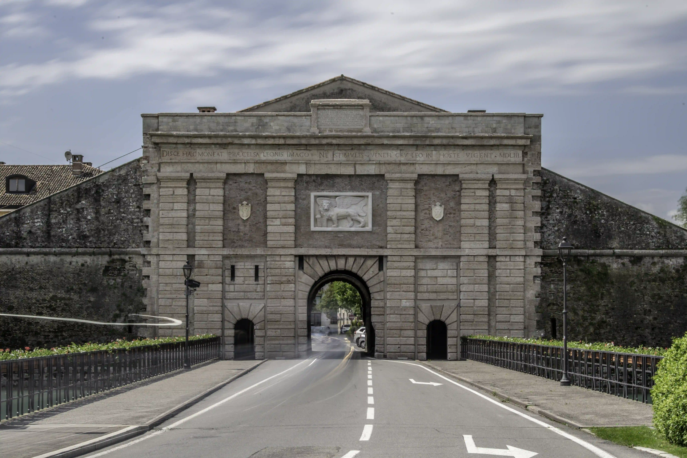
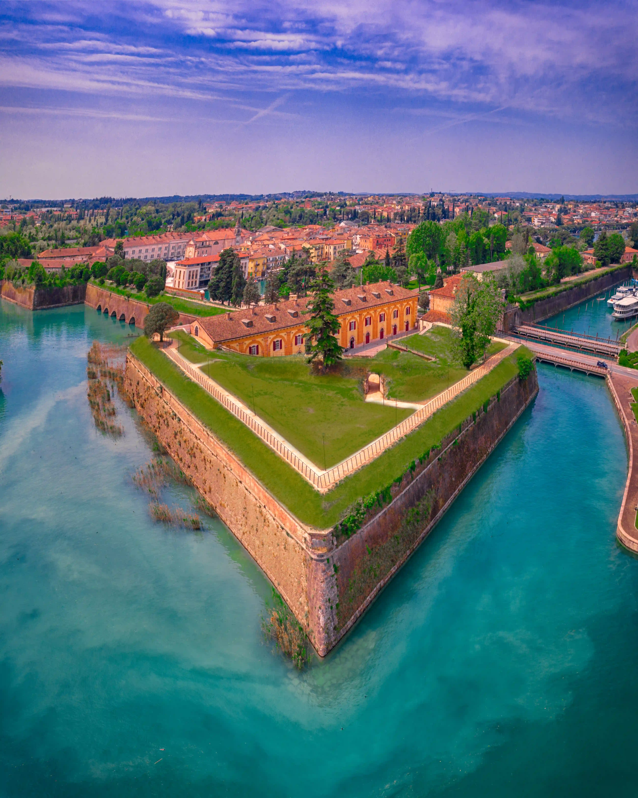
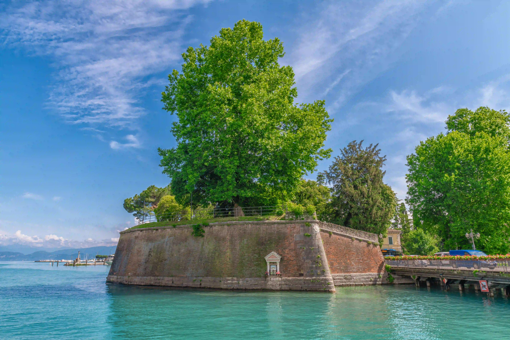
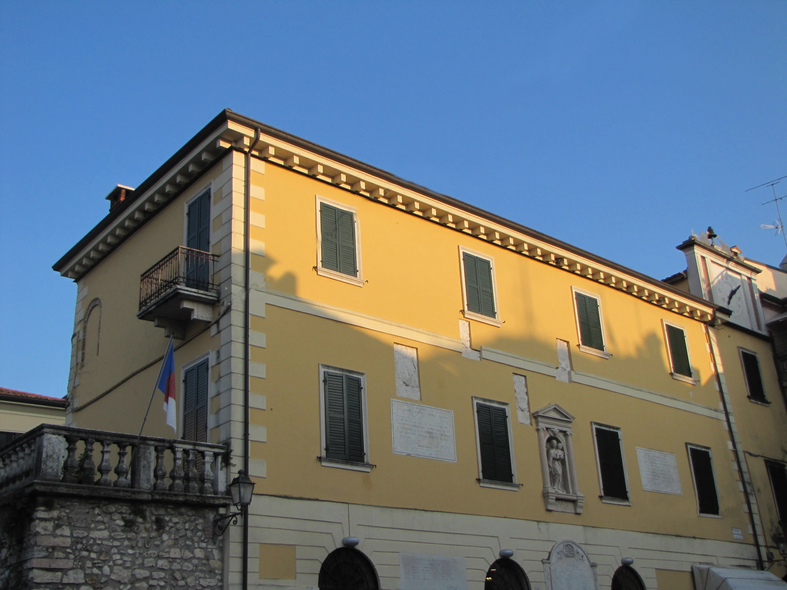
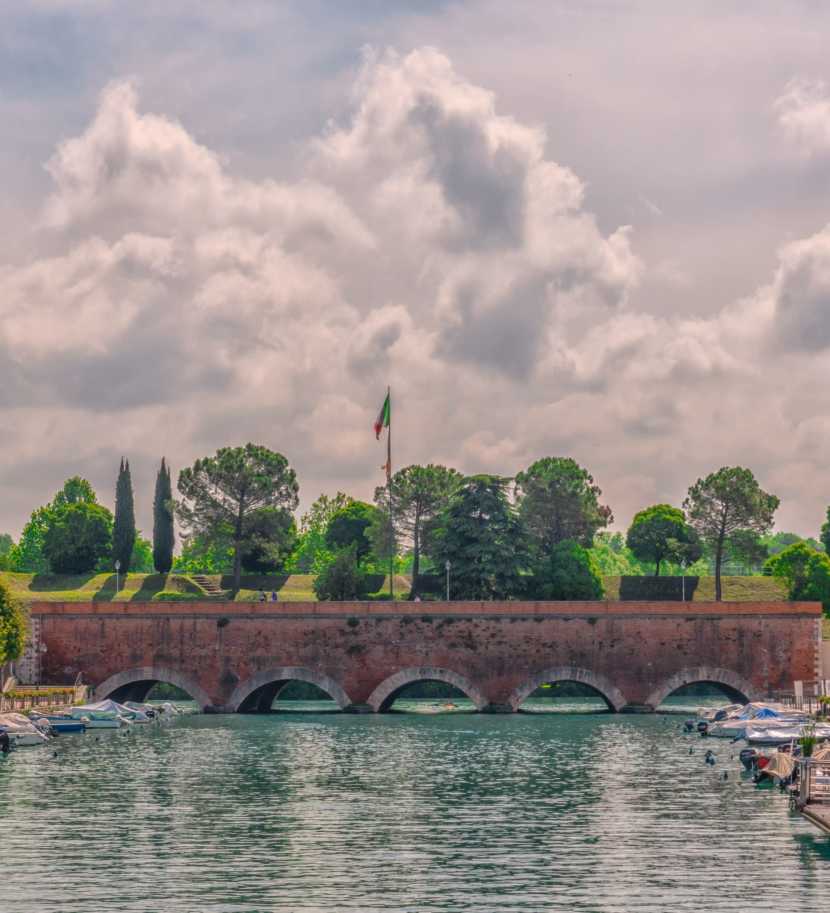
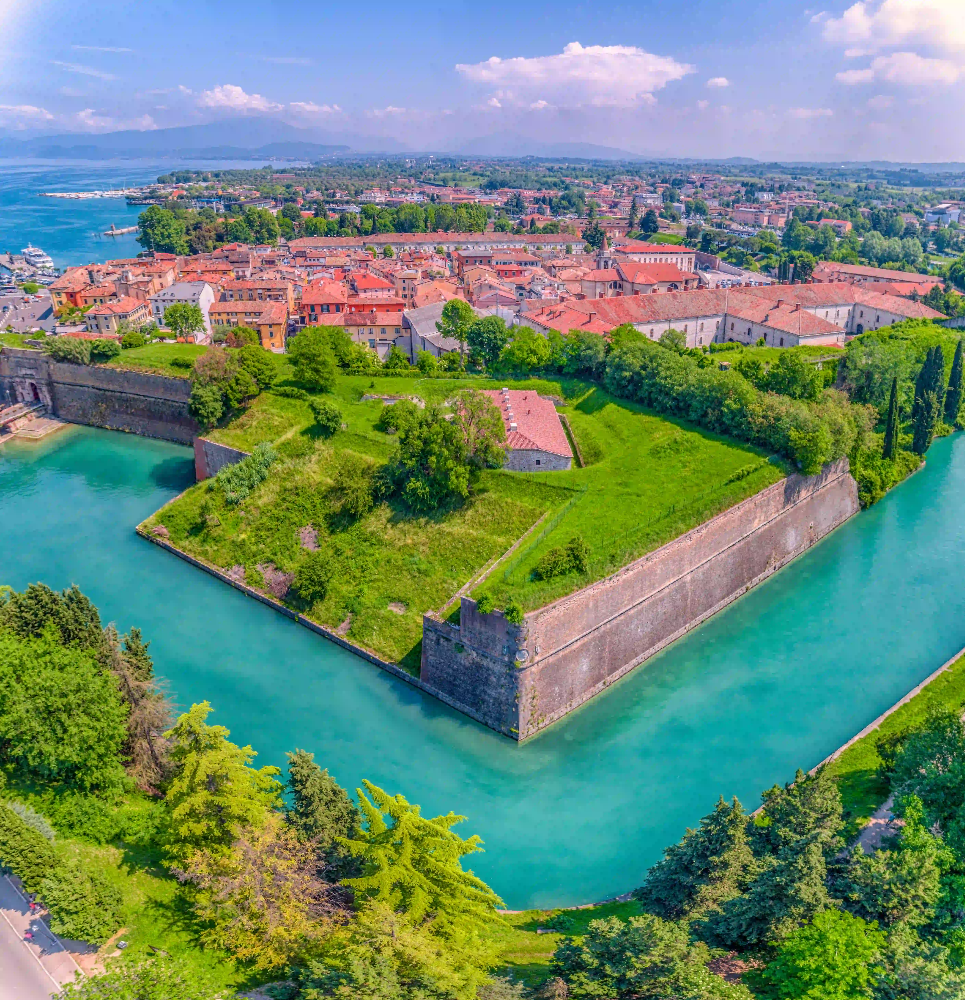

Componenti UNESCO in mappa
PESCHIERA DEL GARDA
Peschiera del Garda si trova in un punto strategico per la difesa dello Stato di Terra: a metà strada fra Venezia e Bergamo, estremo occidentale della Repubblica Veneta, si sviluppa sulla costa meridionale del Lago di Garda, là dove si divide in tre canali, dando vita al Mincio. Il cuore storico di Peschiera sorge sui tre isolotti, collegati alla terraferma da una serie di ponti.
Unica città fortificata del sito seriale collocata in un contesto di lago e sistema fluviale e unica del sistema a pianta pentagonale. Le sue mura, già esistenti in epoca romana, subirono numerosi interventi nel tempo, fino a diventare una fortezza alla moderna sotto il dominio della Repubblica di Venezia: i cinque lati della cinta muraria, che ripercorrono la forma pentagonale del terreno (già evidenziata dalle mura medievali), vennero rinforzati con terrapieni e 5 bastioni (Querini, San Marco, Cantarane, Feltrin e Tognon) e circondati da fossati, ulteriore elemento di difesa oltre le mura, in linea con i nuovi criteri architettonici del periodo. Sempre in epoca veneziana vennero aperte le due porte: Porta Verona e Porta Brescia, orientate rispettivamente verso le due città da cui presero il nome.Punti di interesse:
Porta Verona
Porta Verona, maestoso simbolo della potenza della Repubblica di Venezia, costruita nel 1553, è stata colpita e danneggiata dagli eserciti napoleonici che, in segno di spregio, dopo il trattato di Campoformio del 1797, hanno distrutto il bassorilievo originale del Leone Alato di San Marco.  Nel 2019, all’interno di un prestigioso lavoro di restauro è stata inserita nella sua sede originaria una nuova statua del leone, realizzata in collaborazione con l’Accademia delle belle arti di Verona, che ha riprodotto l’imponenza del leone nelle sue dimensioni originali.
Bastione San Marco
Il Bastione San Marco, eretto nel 1553, è il secondo dei cinque in ordine di costruzione e ancora oggi, in perfetto stato di conservazione, permette di ammirare le strutture tecniche militari delle fortezze alla moderna.
Bastione Querini
Il Bastione Querini, rappresentava, insieme al suo gemello sul lato opposto, demolito nel 1906, uno dei due lati del punto di ingresso alla fortezza per barche e battelli in arrivo dal lago.
Piazza San Marco e Palazzo del Provveditore
Piazza San Marco, cuore del centro storico di Peschiera, si caratterizza per la presenza di due obelischi del XVI secolo che incorniciano il quadrato di fronte al Canale di Mezzo. Su questa piazzetta si affaccia il Palazzo del Provveditore, centro di potere che ospitava i Provveditori, patrizi inviati da Venezia per governare la Fortezza.
Ponte dei Voltoni
Costruito nel 1556 a Fortezza ultimata, il Ponte dei Voltoni è una porzione di cortina muraria, che deve il nome alla sua struttura caratterizzata da cinque voltoni in pietra sull’acqua, sufficientemente bassi da permettere l’ingresso solo alle barche da pesca di piccole dimensioni.  Il Ponte unisce l’isola settentrionale con quella più a Sud, divise dal Canale di Mezzo. Qui vicino le acque del lago si versano nel fiume Mincio.
Porta Brescia
Porta Brescia, con la sua struttura semplice e compatta, caratteristica delle costruzioni militari, permetteva l’accesso alla città fortificata, ma è anche quella che svela il fianco debole della fortezza dominata dalle alture.
Punto strategico della città da cui si può osservare in tutta la sua possenza il lato a Ponente della fortezza, difeso dal fossato – detto Fossa Reale – e compreso fra il Bastione Feltrin e il bastione Tognon con il ponte settecentesco.
